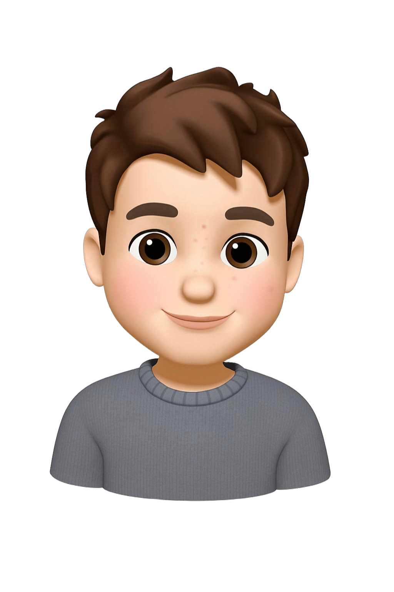

Hello world, my name is
Aitor
Data Science & AI • Computer EngineeringI'm a Computer Science and Data Science student from Spain with a passion for turning complex data into actionable insights. I enjoy exploring machine learning, building innovative projects, and applying technology to solve real-world problems. Currently, I'm focused on developing predictive models and analytical solutions that make an impact in the business and technology space.